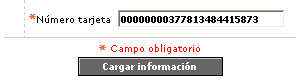
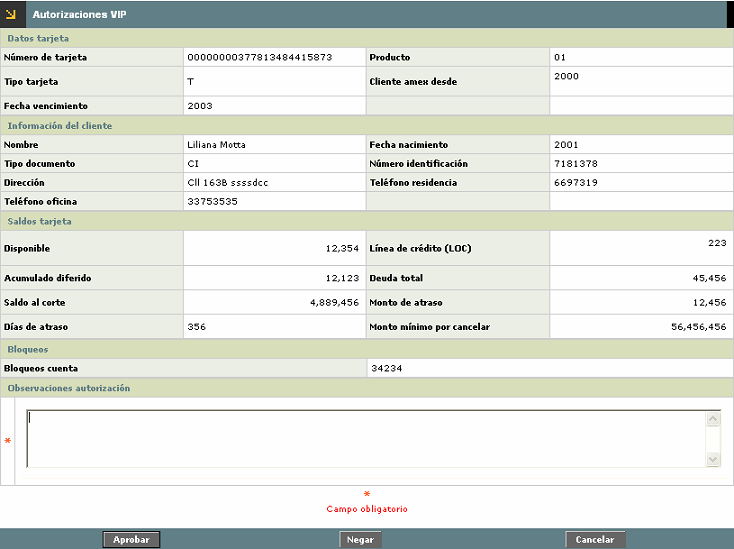

|
Autorizaciones VIP |
Mediante esta opción, el actor puede consultar aquellas tarjetas a las que por cualquier circustancia se les negó una autorización y que por el tipo de cliente a quien pertenece la tarjeta o por políticas de la entidad, se le debe permitir efectuar la transacción.
Debe tenerse en cuenta que si se trata de una autorización referida, la solución se debe dar desde esa opción en particular y no mediante autorizaciones VIP.
Al ingresar al formulario se despliega un filtro inicial en el cual el actor debe diligenciar de manera obligatoria el número de la tarjeta a la que se le negó la autorización.

Una vez ingresado el número de la tarjeta, mediante el botón Cargar información el sistema busca la información de la misma en la tabla de referidos y despliega el formulario correspondiente.
Con excepción del campo 'Observaciones autorización' que es el único editable por el actor, todos los demás campos se toman de la tabla de referidos donde son actualizados mediante el cargue de un archivo de referidos ejecutado desde automatización de procesos.
Nota importante: este formulario requiere que exista información para la tarjeta en la tabla de referidos (CO_REFERRAL); si la tarjeta seleccionada en el filtro no existe en dicha tabla, al utilizar el botón Cargar información se despliega un mensaje indicando este evento al actor y no le permite ingresar al formulario correspondiente.

|
Número de la tarjeta |
Este campo obligatorio muestra el número de tarjeta a la que pertenece la información desplegada. |
|
Recomendación sistema autorizador |
Campo alfanumérico de hasta 400 caracteres, obligatorio, en el cual el usuario del call center registra las observaciones para sustentar el motivo por el cual se negó o aprobó la autorización especial al cliente titular de la tarjeta. |
El formulario contiene dos botones mediante los cuales el actor puede aprobar o negar la autorización vip de acuerdo con las políticas de la entidad, además del botón Cancelar que le permite regresar al formulario inicial que contiene el filtro de consulta.